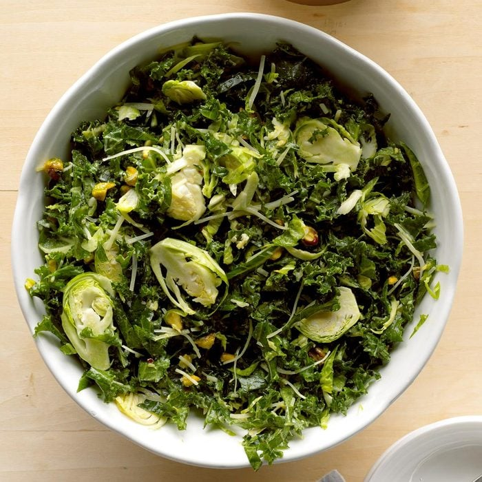

Shredded Kale and Brussels Sprouts Salad
Ingredients:
- 1 small bunch kale (about 8 ounces), stemmed and thinly sliced (about 6 cups)
- 1/2 pound fresh Brussels sprouts, thinly sliced (about 3 cups)
- 1/2 cup pistachios, coarsely chopped
- 1/2 cup honey mustard salad dressing
- 1/4 cup shredded Parmesan cheese
Directions:
- In a large bowl, combine first 4 ingredients. Add dressing; toss to coat.
Nutrition Facts:
- 1 cup: 207 calories
- 14g fat (2g saturated fat)
- 8mg cholesterol
- 235mg sodium
- 16g carbohydrate (5g sugars, 4g fiber)
- 7g protein
- Diabetic Exchanges: 3 fat
- 2 vegetable
- 1/2 starch
Chicken & Brussels Sprouts Salad
Ingredients:
- 3 tablespoons olive oil
- 20 fresh Brussels sprouts, trimmed and halved
- 2 shallots, sliced
- 1/2 teaspoon salt
- 1/2 cup balsamic vinegar
- 1 skinned rotisserie chicken, shredded
- 3 cups torn romaine
- 2/3 cup chopped roasted sweet red peppers
- 1/2 cup chopped sun-dried tomatoes (not oil-packed)
- 1/2 cup balsamic vinaigrette
- 3/4 cup pistachios, toasted
- 3/4 cup dried cranberries
- Fresh goat cheese, optional
Directions:
- In a large skillet, heat oil over medium heat. Add Brussels sprouts and shallots; cook and stir until browned and tender, 10-12 minutes. Sprinkle with salt; drizzle with balsamic vinegar. Cook 2-3 minutes, reducing liquid and stirring to loosen browned bits from pan.
- Combine chicken, romaine, red pepper and sun-dried tomatoes. Toss with Brussels sprouts mixture and balsamic vinaigrette. Top with pistachios and dried cranberries; serve with goat cheese if desired.
Nutrition Facts:
- 1-1/3 cups: 500 calories
- 25g fat (4g saturated fat)
- 73mg cholesterol
- 657mg sodium
- 39g carbohydrate (24g sugars, 7g fiber)
- 30g protein

Brussels Sprouts Salad
Ingredients:
- 1-1/2 pounds fresh Brussels sprouts, trimmed and halved
- 2 green onions, chopped
- 1/2 cup olive oil
- 2 tablespoons lemon juice
- 1 to 1-1/2 teaspoons Dijon mustard
- 1/2 teaspoon salt
- 1/2 teaspoon dried thyme
- 1/4 teaspoon pepper
- 1 bunch red leaf lettuce or radicchio, torn
- 2 tablespoons slivered almonds, toasted
Directions:
- Place Brussels sprouts in a large saucepan; add 1 in. of water. Bring to a boil. Reduce heat; simmer, covered, until tender, 8-10 minutes. Drain; rinse with cold water and pat dry. Combine with green onions.
- Meanwhile, whisk together next 6 ingredients. Toss 2 tablespoons of dressing with lettuce; transfer to a serving bowl. Pour remaining dressing over Brussels sprouts and onions; toss to coat. Mound on lettuce. Sprinkle with almonds.
Nutrition Facts:
- 1 cup: 171 calories
- 15g fat (2g saturated fat)
- 0 cholesterol
- 192mg sodium
- 9g carbohydrate (2g sugars, 4g fiber)
- 4g protein
Shaved Brussels Sprout Salad
Ingredients:
- 1 tablespoon cider vinegar
- 1 tablespoon Dijon mustard
- 2 teaspoons honey
- 1 small garlic clove, minced
- 2 tablespoons olive oil
- 1 pound Brussels sprouts, halved and thinly sliced
- 1 small red onion, halved and thinly sliced
- 1/3 cup dried cherries, chopped
- 1/3 cup chopped pecans, toasted
Directions:
- Whisk together the first 4 ingredients; gradually whisk in oil until blended.
- Place Brussels sprouts, onion and cherries in a large bowl; toss with dressing. Refrigerate, covered, at least 1 hour. Stir in pecans just before serving.
Nutrition Facts:
- 3/4 cup: 156 calories
- 9g fat (1g saturated fat)
- 0 cholesterol
- 79mg sodium
- 18g carbohydrate (10g sugars, 4g fiber)
- 3g protein
- Diabetic Exchanges: 2 fat, 1 vegetable, 1/2 starch
Beef Burgundy Over Noodles
Ingredients:
- 2 teaspoons butter
- 1/2 pound beef top sirloin steak, cut into 1/4-inch-thick strips
- 2 tablespoons diced onion
- 1-1/2 cups quartered fresh mushrooms
- 3/4 cup Burgundy wine or beef broth
- 1/4 cup plus 2 tablespoons water, divided
- 3 tablespoons minced fresh parsley, divided
- 1 bay leaf
- 1 whole clove
- 1/4 teaspoon salt
- 1/8 teaspoon pepper
- 2 cups uncooked medium egg noodles (about 4 ounces)
- 1 tablespoon all-purpose flour
- 1/2 teaspoon browning sauce, optional
Directions:
- In a Dutch oven or large nonstick skillet, heat butter over medium-high heat; saute beef and onion just until beef is lightly browned, 1-2 minutes. Stir in mushrooms, wine, 1/4 cup water, 2 tablespoons parsley and seasonings; bring to a boil. Reduce heat; simmer, covered, until beef is tender, about 1 hour.
- Meanwhile, cook egg noodles according to package directions. Drain.
- In a small bowl, mix flour and remaining water until smooth; stir into beef mixture. Bring to a boil; cook and stir until thickened, about 2 minutes. Discard bay leaf and clove. If desired, stir in browning sauce. Serve over noodles. Sprinkle with remaining parsley.
Nutrition Facts:
- 1-1/2 cups: 376 calories
- 10g fat (5g saturated fat)
- 88mg cholesterol
- 391mg sodium
- 34g carbohydrate (2g sugars, 2g fiber)
- 32g protein
- Diabetic Exchanges: 3 lean meat, 2 starch, 1 vegetable, 1 fat

Potato-Topped Ground Beef Skillet
Ingredients:
- 2 pounds lean ground beef (90% lean)
- 1/2 teaspoon salt
- 1/4 teaspoon pepper
- 1 tablespoon olive oil
- 1 large onion, chopped
- 4 medium carrots, sliced
- 1/2 pound sliced fresh mushrooms
- 4 garlic cloves, minced
- 2 tablespoons all-purpose flour
- 2 teaspoons herbes de Provence
- 1-1/4 cups dry red wine or reduced-sodium beef broth
- 1 can (14-1/2 ounces) reduced-sodium beef broth
- 1-1/4 pounds red potatoes (about 4 medium), cut into 1/4-inch slices
- 1 tablespoon olive oil
- 1/4 teaspoon salt
- 1/8 teaspoon pepper
- 1/3 cup shredded Parmesan cheese
- Minced fresh parsley, optional
Directions:
- In a 12-in. cast-iron or other ovenproof skillet, cook and crumble beef over medium-high heat until no longer pink, 6-8 minutes. Stir in salt and pepper; remove from pan.
- In same pan, heat oil over medium-high heat; saute onion, carrots, mushrooms and garlic until onion is tender, 4-6 minutes. Stir in flour and herbs; cook 1 minute. Stir in wine; bring to a boil. Cook 1 minute, stirring to loosen browned bits from pan. Add beef and broth; return to a boil. Reduce heat; simmer, covered, until flavors are blended, about 30 minutes, stirring occasionally. Remove from heat.
- Meanwhile, place potatoes in a large saucepan; add water to cover. Bring to a boil. Reduce heat; cook, uncovered, until tender, 10-12 minutes. Drain; cool slightly.
- Preheat broiler. Arrange potatoes over stew, overlapping slightly; brush lightly with oil. Sprinkle with salt and pepper, then cheese. Broil 5-6 in. from heat until potatoes are lightly browned, 6-8 minutes. Let stand 5 minutes. If desired, sprinkle with parsley.
Nutrition Facts:
- 1-1/4 cups: 313 calories
- 14g fat (5g saturated fat)
- 74mg cholesterol
- 459mg sodium
- 18g carbohydrate (4g sugars, 3g fiber)
- 26g protein
- Diabetic Exchanges: 3 lean meat, 1 vegetable, 1/2 starch, 1/2 fat